最近在移植Redpitaya的code至Altera FPGA時需要想一個辦法可以讓使用者輸入參數，
由於我接手時已經是有先拉好Qsys CPU的狀態，於是就決定自己建立一個Qsys的IP讓CPU
透過avalon bus與此IP溝通來做W/R!
流程大致如下:
- 先把這個IP的verilog code寫好。
- 在Qsys介面裡按下左側IP Catalog裡的New Component，之後會跳出Component editor視
窗。
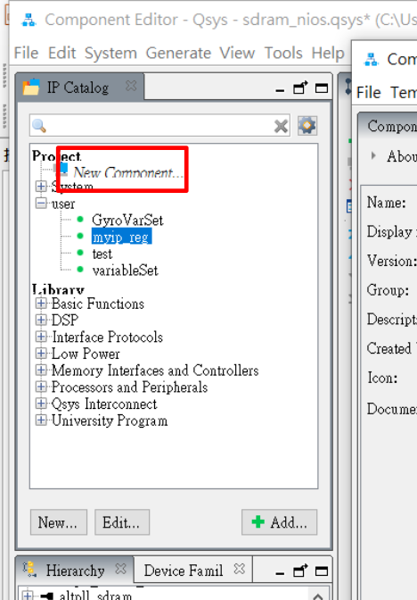
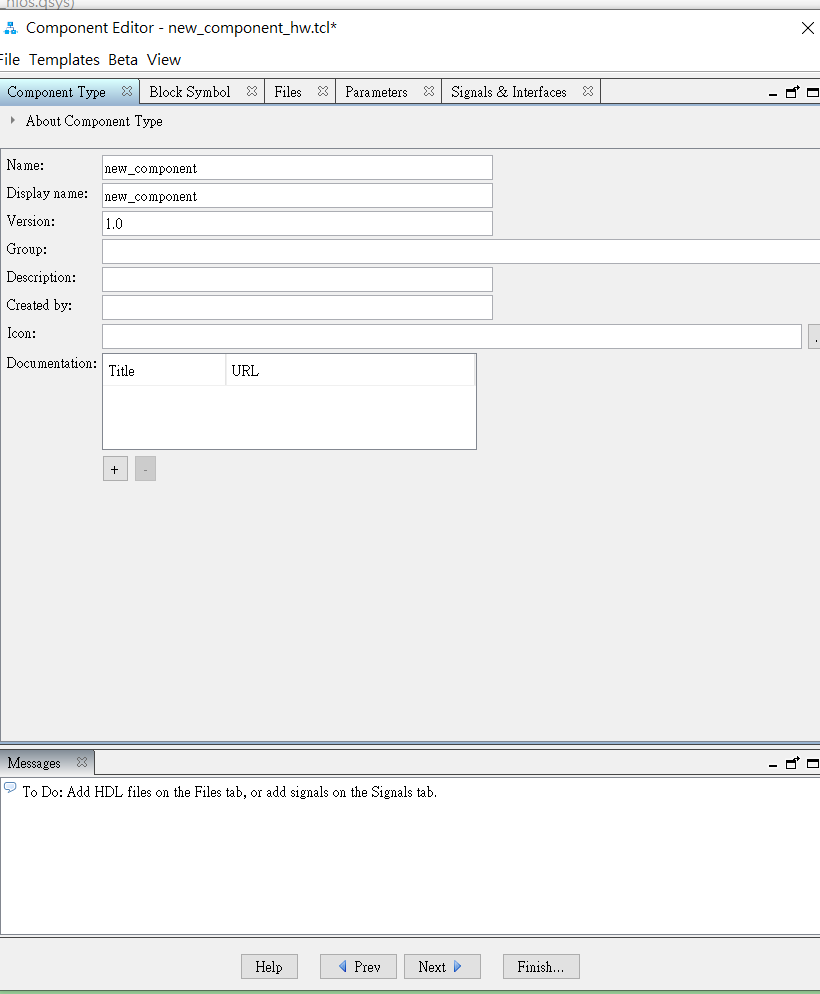
- 在component type tab填寫”name”跟”display name”兩欄位， name為此定義IP名字，
display name為之後顯示在ip catalog list的名字:
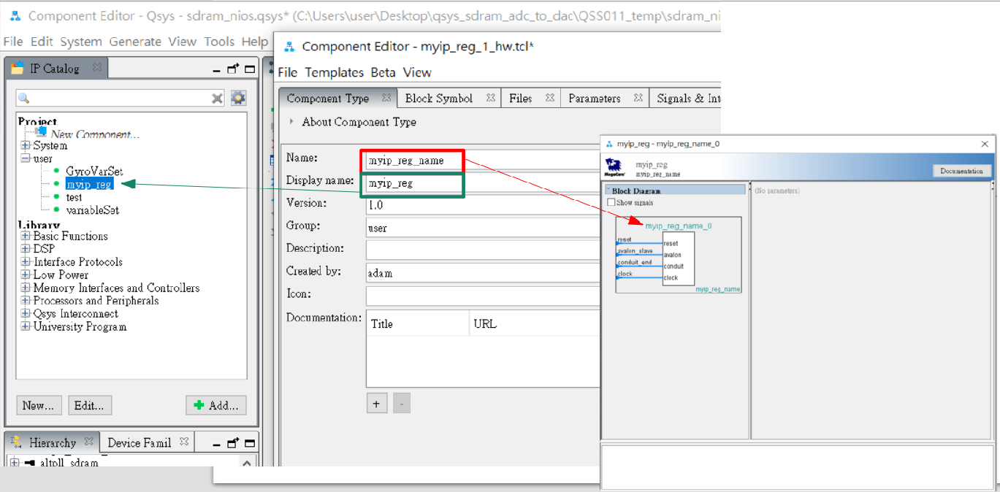
- 在files tab選擇(1.)要生成ip的.v檔案，按下Analyze Synthesis Files後，剛剛寫在.v檔案裡所有
的i/o都會顯示在Block symbol tab裡 :
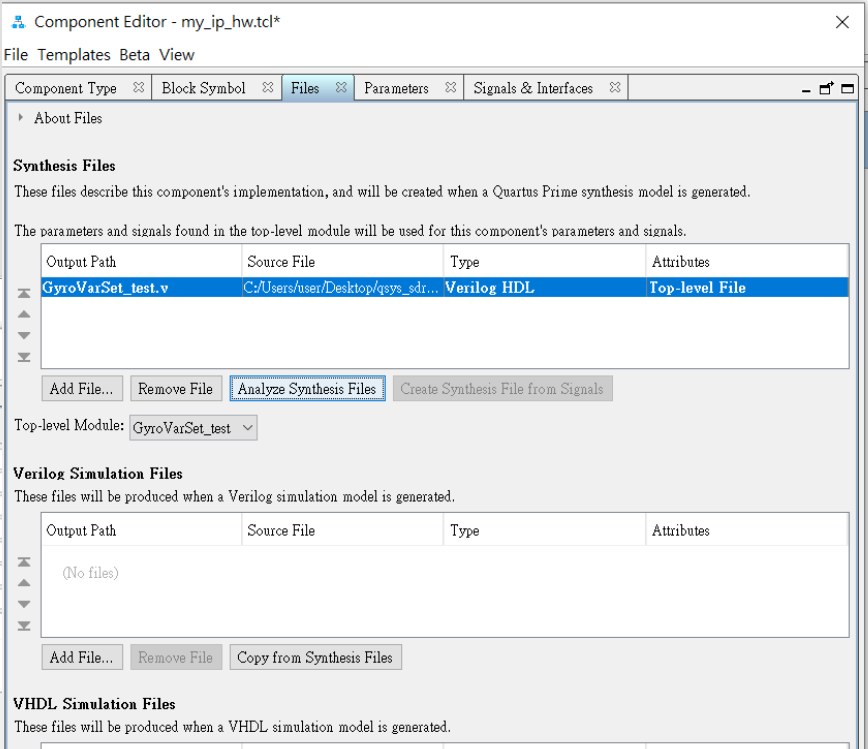
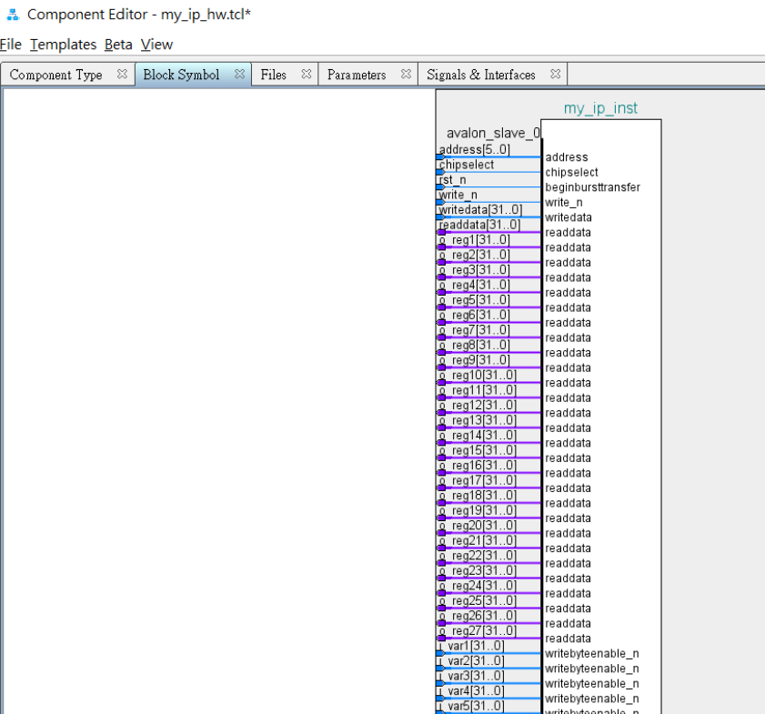
- Qsys IP的訊號都有對應到某種分類，我們必須把上一步自動產生的訊號根據其種類來做分類。
在signal & interfaces tab裡面，左側的列表可以看到”addsignal” 與 “addinterface”，
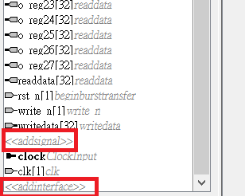
“addinterface”是ip訊號的所有分類，按下後可以看到很多選項，
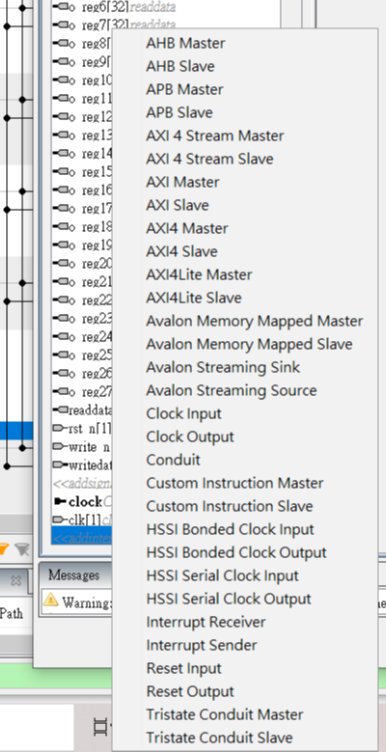
對於產生一個可提供變數w/o功能IP基本需要的分類有:avalon memory mapped slave、
clock input、reset input、conduit這四樣，
設定好分類後按下”addsignal”來為每個分類產生對應的訊號。
在”addinterface”時的name欄位代表顯示在生成後IP的訊號分類名稱，可任意命名。
在”addsignal”時的name欄位代表此IP會使用到的變數的名稱，需與.v檔案裡i/o的名稱相同。
各個分類與signql照著圖設定(左側是interface，右側是signal):
6.1 clock input :
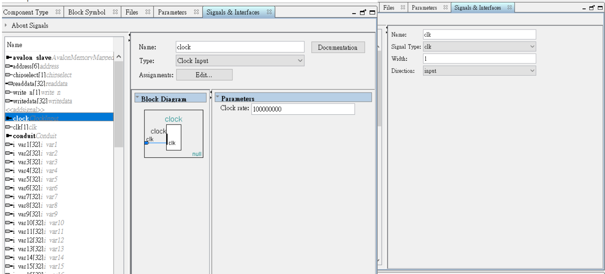
6.2 reset input:
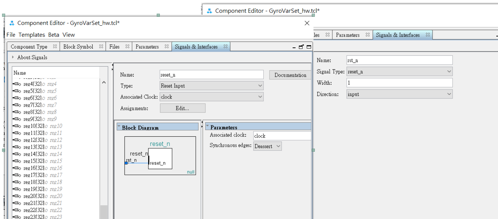
6.3 avalon memory mapped slave:
此為cpu與Qsys IP溝通的avalon bus的分類，為了要有w/r的功能必須要有 readdata,
writedata, write_n, chipselect, address這五種signal:address :
IP裡面可供w/r功能之register的個數決定了address這個訊號的bit數。舉例來說這次我設
計的IP需要提供系統的變數共有60個，那address就必須大到包含這些變數的數目，所以
address至少要6個bit(2^6=64)。之後IP生成好後在Qsys拉出來使用，系統會根據address
的bit數來產生對應的address range，每一個register會使用到4byte的空間(使用32bit的
register)，所以64個register會用掉64*4 = 256 = 0xff byte的空間，Qsys配好address
range後可以在address map裡面做確認:
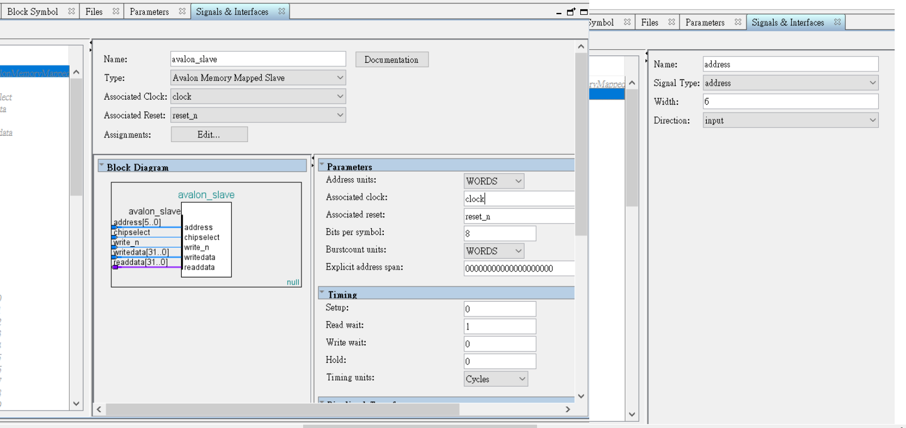
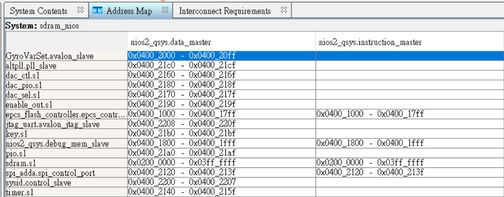readdata :
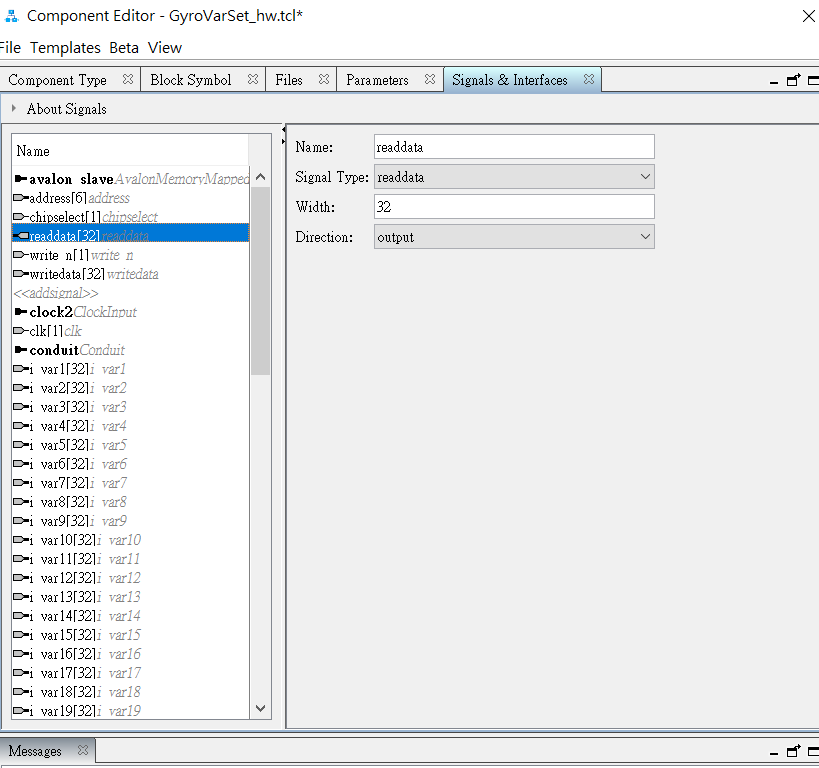chipselect :
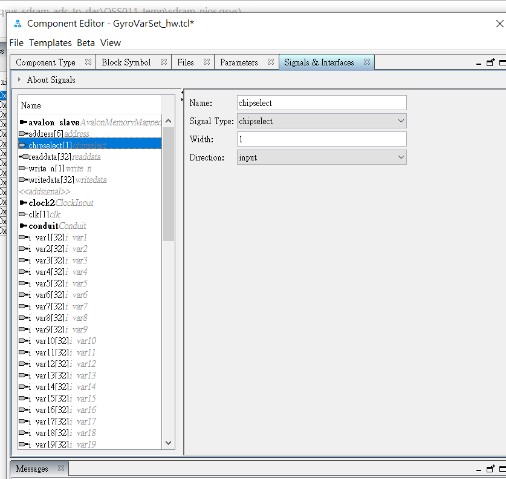write_n :
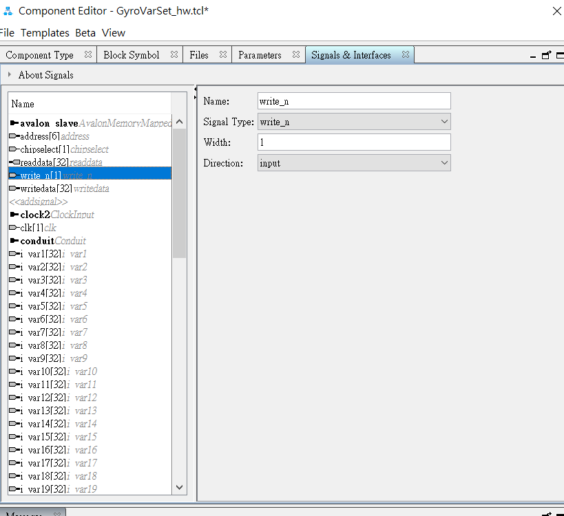writedata :
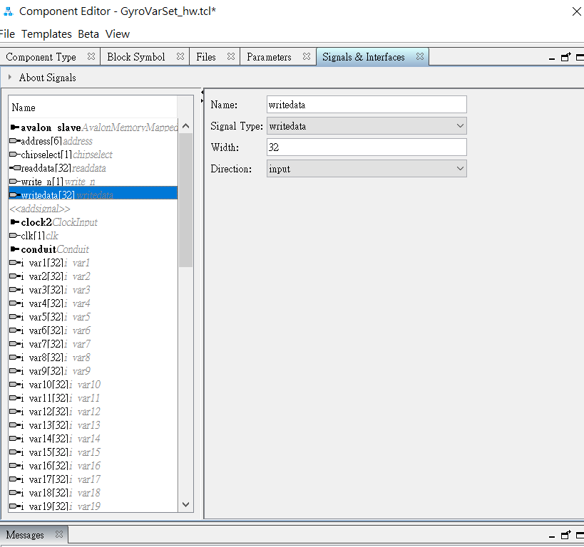
6.4 conduit :
這個分類是把自己在.v檔案裡定義的變數引出去。要注意的是某版以後的Qartus在conduit這個分類裡每個signal需要自己填寫”Signal type”，
建議跟name同名都取為.v檔案裡的變數名稱，之後會顯示在block diagram上面。
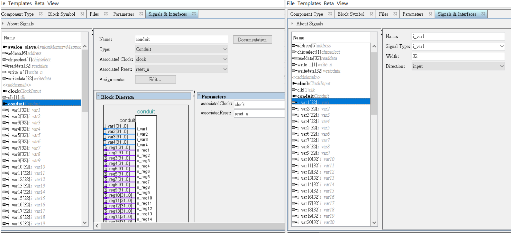
以上就是產生一個基本Qsys 自定義IP的流程，完成後就可以把IP拿出來使用了!